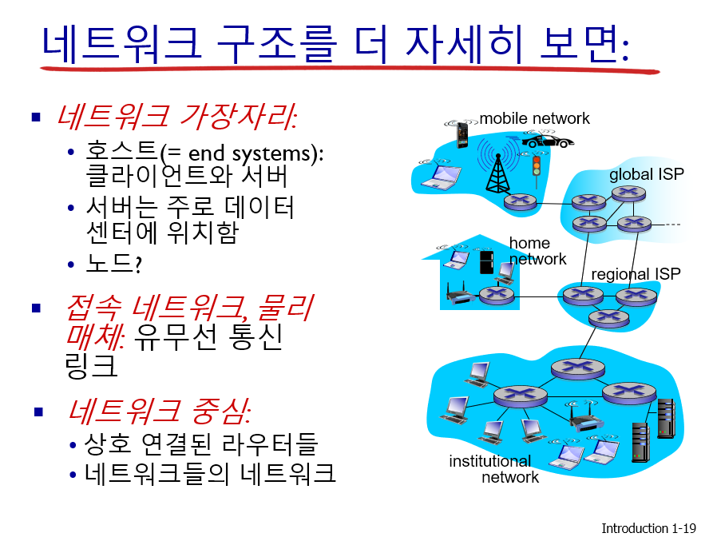

1.1인터넷이란 무엇인가?
Inter 과 Intra를 구분해보면 Intra는 내부망을 의미하고있으며, Inter는 외부망을 의미한다.
따라서 우리가 많이 사용하는 외부망, 인터넷은 전 세계적으로 수십억 개의 컴퓨팅 장치를 연결하는 컴퓨터 네트워크이다.
컴퓨팅 장치에 대해서 우리는 host, 종단 시스템으로도 부르며 이는 통신 링크와 패킷 스위치의 네트워크로 연결이 된다.
이때, 데이터를 전송하는 전송률에 대해서 초당 비트 수를 의미하는 bps(bit per second) 단위를 사용한다.
host에서 host로 데이터를 보낼 때, 발신하는 쪽에서는 데이터를 세그먼트(segment)로 나누고
각 세그먼트에 헤더(header)를 붙이는데 이러한 정보 패키지를 컴퓨터 네트워크에서 패킷(packet)이라고 부른다.
우리는 인터넷에 접속하기 위해서 ISP(Internet Service Provider)라고 하는 통신사를 통해서 서비스를 제공받고있다.
그리고 우리가 늘기는 contents 들은 CP(Content Provider)들이 인터넷을 통해서 서비스를 제공해주고 있다.
이렇게 통신에도 규약들이 있는데 이것을 프로토콜(Protocol)이라고 하며,
대표적으로 TCP(Transmission Control Protocol)와 IP(Internet Protocol)라고 하는 인터넷에서 가장 중요한 프로토콜 이있다.
이러한 규약들도 표준이 존재 하는데 많은 표준 기구들이 존재하고 거기에서 나오는 표준들이 있다.
Ex) IEEE, ISO(Internet Service Organization)등등이 있다.
1.2네트워크의 가장자리
host는 클라이언트(client) 와서버(server)로 구분되기도 한다. 클라이언트는 데스크톱, 노트북, 스마트폰 등을 의미하고,
server는 웹 페이지를 저장하고 비디오를 스트림하는 등의 역할을 하고있다.
네트워크의 구조를 위보다 좀더 자세히 보면,
네트워크의 가장자리 와 접속 네트워크, 물리 매체 그리고 네트워크 중심으로 이루어져 있다.

접속 네트워크에는 DSL(digital subscriber line)과 케이블 망, 광랜, 홈 네트워크, 기업 접속 네트워크 등이 있다.
디지털은 불연속적인 신호를 대개 의미하고, 아날로그는 연속적인 신호를 의미한다. ex) FM, AM 라디오 주파수
Hz는 1초동안 진동하는 진동수의 단위를 의미한다.
비트 전송률 대역폭 단위에 대해서는 위에 설명했으니 넘어가자.
1.3네트워크 코어
네트워크 코어 의 개념은 상호 연결된 라우들의 네트워크를 의미하며,
라우터는 패킷교환이라는 단계를 반복하는데, 보내는 패킷의 크기와(X-bit) 전송속도(Y bps)에 대해서
걸리는 시간은 대략 X/Y초의 시간이 걸린다.
또한 패킷 교환시에는 큐잉 지연과, 손실이 일어날 수 있으며, 자원과 시간에 제한이 생기면 손실이 생길 수 있다.
네트워크 코어의 핵심 기능으로는 라우팅과 전달이 있다.
또 다른 방식으로는 회선 교환이 존재하며, 2가지 방식이 있다.
바로 FDM 방식 과 TDM방식이 있으며
FDM은 하나의 대역폭을 작은 대역폭 여러개로 분할하여 여러 단말기를 동시 수신하게 하는 방식이고,
TDM은 대역폭을 시간 슬롯에 따라서 나누어 시간을 분할해서 사용하는 방식이다.

우리들의 인터넷의 구조 에서는 ISP들을 모두 서로 연결하는 것 보다는,
각 접속 ISP를 한 글로벌 통과 ISP에 연결하는 방식으로 운영을 한다.
1.4네트워크에서의 지연, 손실, 처리율
패킷의 처리하는 시간과 공간적인 제한이 발생함에 따라 지연과 손실이 일어나게 되는데,
큐잉지연(revisited) R:리크 대역폭(bps), L:패킷 길이(bit), a: 평균 패킷 도착률 사이의 상관관계에 대해서 사진으로 첨부.
1.5프로토콜 계층, 서비스 모델
네트워크는 많은 요소들로 구성이 되어있다. 호스트, 라우터, 다양한 매체의 링크, 응용, 프로토콜, HW,SW등등
네트워크의 계층화의 이유에 대해서는 복잡한 시스템에서 명시적인 구조가 식별 관계를 개선해주는 역할을 한다.
그리고 모듈화로 시스템의 관리와 갱신이 용이 해진다는 장점 또한 있다.
인터넷 프로토콜 스택에는 가 있으며,
ISO/OSI를 참조한 모델에서는 presentation의 표현 단계와 session의 세션 단계가 추가가 되었으며,
인터넷 스택은 이 계층들이 없다.
1.6공격받는 네트워크: 보안
네트워크 보안의 분야로는:
악당들은 컴퓨터 네트워크를 어떻게 공격하는가?
우리는 공격을 어떻게 방어할 것인가?
공격하기 어려운 시스템을 어떻게 설계할 것인가
원래의 인터넷은 보안을 별로 염두에 두지 않고 설계가 되었으며 이는 "상호 신뢰하는 일군의 사용자들이 접속된 투명한 네트워크"
이며, 프로토콜 설계자들은 보안 문제를 따라 잡아야 하고 모든 계층에서 보안이 고려가 되어야 한다.